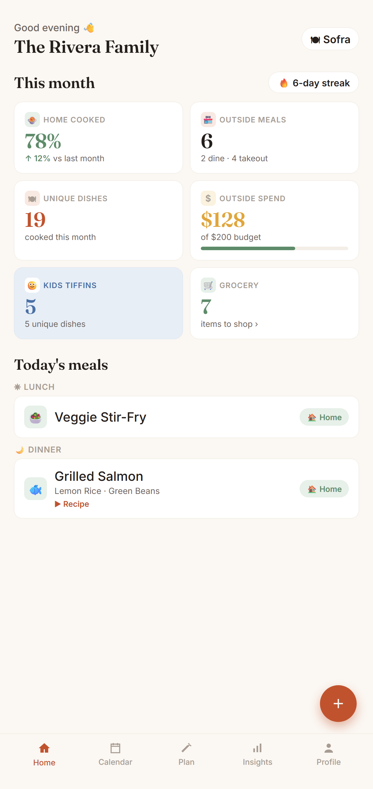

Your family's meal memory
Sofra remembers every meal your family makes — then plans your week from the dishes you already love. No recipe browsing, no calorie guilt. Just your real food habits, turned into effortless plans and honest insights.
Most meal apps give you new recipes to try. Sofra does the opposite — it gives you back the meals your family already makes and forgets. It's a memory tool, not a discovery tool.
Every meal you log is remembered forever — searchable, sortable, and always yours. Whiteboards erase; Sofra doesn't.
Auto-generate a week from what your family actually cooks — balanced across cuisines, avoiding recent repeats.
See your home-cooked ratio and exactly where your food budget goes. The pattern most families never notice.
"It's been 87 days since Batata Bhaji." Sofra surfaces the dishes hiding in your back catalogue.
Plan a separate kids-tiffin menu alongside family meals, with repeat-alerts to beat tiffin fatigue.
Everyone in the family adds and sees meals in real time. A single source of truth for the kitchen.
Turn any insight into a branded stat card and share it with family or on social — and enjoy a little confetti when you accept a week's plan.
From sign-in and a shared household to ten-second logging, an auto-planned week — with a little confetti when you accept it — and any insight shared as a branded card. A terracotta-and-sage design built to feel like a home kitchen, in light and dark mode.





Ten-second logging with autocomplete and quick-picks. Home meals, takeout, dine-outs — even a full thali.
After a week or two, Sofra knows your family's dishes, cadence, and spending.
Auto-plan the week, spot spending patterns, and rediscover dishes you'd forgotten.
No — it's a memory tool. Sofra remembers the meals your family already makes and plans from those, instead of pushing new recipes at you.
You share one household. Everyone adds and sees meals together, in sync.
Sofra is free to use at launch, with no ads.
Your meals stay private to your household, encrypted in transit. You can delete your account and all its data anytime from Settings.
Android first, via Google Play. Light and fast, in light and dark mode.
No. Just log meals as you go — the planning and insights build themselves from your own history.
Sofra is launching on Google Play. The release is around the corner — explore the guide while you wait, and it'll be a tap away soon.
No ads. No selling your data. Your family's meals stay private to your household — and you can delete everything anytime.